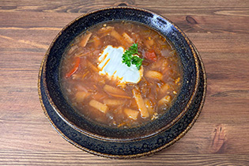
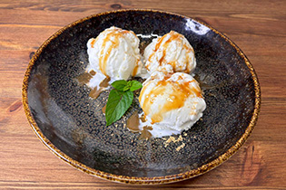
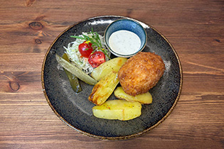

Семейные традиции и гостеприимство
Семейное дело
Более 20 лет с любовью к своему делу, истории и гостям
«Петровская Таможня» (Peetri Toll) — не просто ресторан или музей, а настоящее семейное дело, которому мы посвятили больше двух десятилетий. Всё это время нашей главной страстью остаётся сохранение уникальной истории Палдиски, бережное возрождение старинных традиций и искреннее гостеприимство.
Нам важно, чтобы каждый гость — будь то путешественник, заглянувший на обед, или большая семья, отмечающая юбилей, — чувствовал себя как дома. Мы сами встречаем гостей, разрабатываем блюда, собираем исторические коллекции и вкладываем душу в каждый уголок этого старинного дома.

Архитектурное наследие
История здания
Здание с двухвековой судьбой
1760-е
Первые упоминания и строительство здания по проекту архитектора Иоганна Давида Бантельмана.
XIX век
Балтийское отделение Ревельской таможни — важный форпост морской торговли и контроля на Балтике.
XX век
Государственная таможня Эстонской Республики. По воспоминаниям Пауля Лаана, сына начальника таможни, перед войной под полом спрятали освящённый церковный крест — и дом пережил Вторую мировую почти без повреждений. В советские годы здесь были мастерские и офицерский бар.
2005 — наши дни
После реставрации открыта таверна «Петровская Таможня». Дом пережил пожар 2015 года, был полностью восстановлен и сегодня остаётся центром культурной и гастрономической жизни города.

Город и его легенды
История Палдиски
От петровского форпоста до современного морского города
Летопись Палдиски началась 23 июля 1718 года, когда Пётр I лично заложил здесь незамерзающий военный порт и морскую крепость на берегу залива Пакри — тогда Рогервик. Бастионы вырубали прямо в известняковом обрыве, а каменный мол должен был соединить материк с островами Пакри.
За три столетия город пережил времена Екатерины II, был местом каторги Салавата Юлаева, получил железную дорогу до Санкт-Петербурга и одну из лучших мореходных школ Эстонии. В советское время Палдиски был закрытым городом с учебным центром атомных подводных лодок. Сегодня это открытый миру морской край с величественными клифами Пакри.

Фотоархив
Галерея
В объективе «Петровской Таможни»





Актуальное
Новости
Все новости
Октябрь 2026
Документальный фильм о выставке холодного оружия
Премьера 12-минутного фильма о коллекции — на эстонском, английском и русском языках.

Сентябрь 2026
Сезонное меню
Согревающие авторские напитки из местных ягод и трав.
Май 2026
Летняя терраса открыта
Начинаем сезон отдыха на свежем морском воздухе.
Сообщество и развитие края
Развиваем регион вместе
Мы убеждены, что бизнес должен приносить пользу родной земле. Наша команда занимается развитием региона, сохранением исторической памяти и туристической привлекательностью волости Ляэне-Харью.
Многие наши культурные, образовательные и инфраструктурные проекты получили поддержку фондов, самоуправления и партнёров. Благодаря этому мы создаём новые экспозиции, издаём материалы и делаем Палдиски яркой точкой на карте Эстонии.
- Lääne-Harju Vald
- MTÜ Toetusgrupp
- Lääne-Harju Koostöökogu
- LEADER
- Eesti Kultuurkapital
- AS Alexela
- AS Derevaat
Отзывы гостей
Что говорят наши гости
★★★★★
«Потрясающее место с невероятной энергетикой! Очень сытная и вкусная кухня, а второй этаж с выставкой оружия и фильмом — это отдельный восторг.»
TripAdvisor
★★★★★
«Настоящий семейный уют. Чувствуется, с какой любовью хозяева относятся к каждому предмету и к каждому гостю.»
Google Reviews